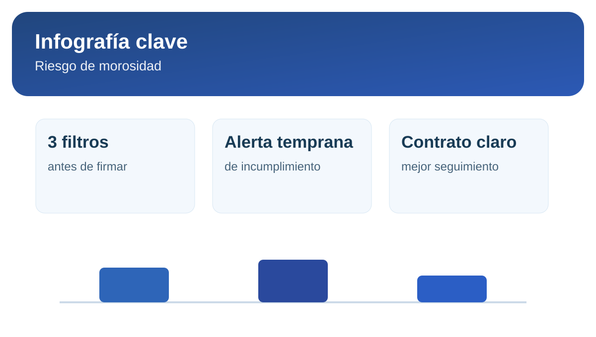

5 señales para reducir riesgo de morosidad en alquiler
El mejor momento para prevenir morosidad es antes de firmar. Una evaluación incompleta puede verse bien en el papel y romperse en el primer trimestre de alquiler.
1. Relación ingreso-renta consistente
Si el esfuerzo de pago es demasiado alto, el riesgo sube incluso con buen perfil laboral. Evalúa sostenibilidad mensual, no solo el ingreso declarado.
2. Estabilidad y trazabilidad laboral
Verifica continuidad de ingresos, tipo de contrato y antigüedad. Cuando la fuente de ingresos no es clara, la probabilidad de incumplimiento crece.
3. Historial y referencias verificables
- Referencias de arrendamiento anteriores.
- Coherencia entre información laboral y financiera.
- Comportamiento de respuesta durante la evaluación.
Infografía rápida: filtro antirriesgo

4. Comportamiento durante la negociación
El modo en que un postulante negocia también aporta señales: evasión de requisitos, cambios constantes o presión excesiva suelen anticipar fricción operativa.
5. Contrato claro y controles de seguimiento
Un contrato preciso, con reglas de pago y penalidades, no reemplaza una buena evaluación, pero sí reduce ambigüedades cuando aparecen incumplimientos.
Protege tu proceso con un checklist legal y comercial antes de cerrar.
Revisar contrato de alquiler